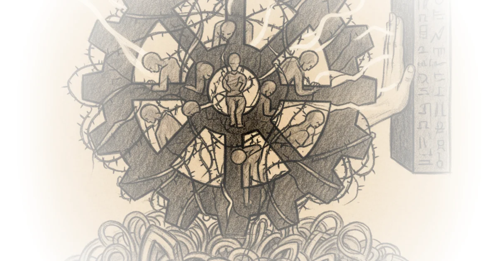
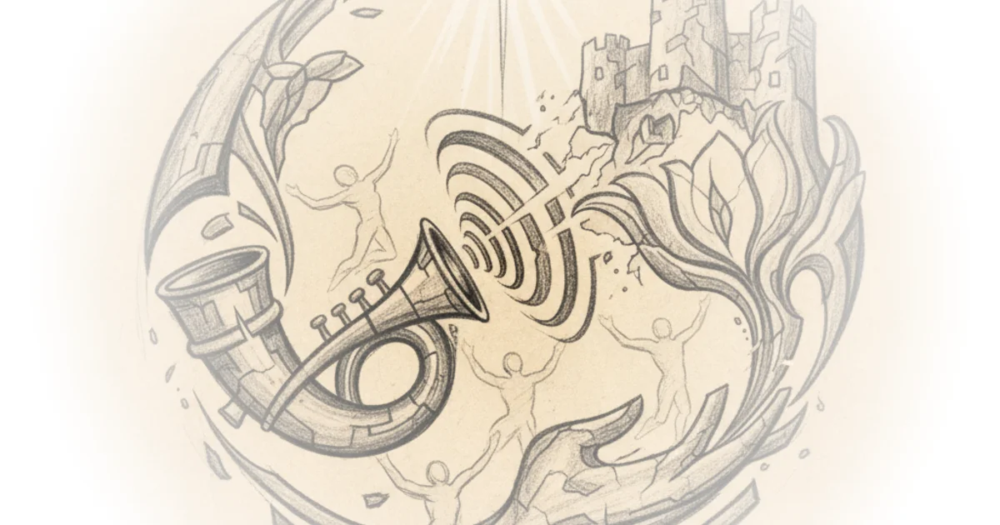

Contre l'Avant-Garde Anarchierkegaard · Kierkegaardian Reflections ·Nov 27, 2025 · 17 min read · Philosophy 
Ellul on Praxis Anarchierkegaard · Kierkegaardian Reflections ·Oct 22, 2025 · 18 min read · Philosophy
Secular Messianism Anarchierkegaard · Kierkegaardian Reflections ·Oct 15, 2025 · 12 min read · Philosophy
Day on Marx and Prayer Anarchierkegaard · Kierkegaardian Reflections ·Oct 10, 2025 · 12 min read · Philosophy
Whose Judgement? Which Rationality? Anarchierkegaard · Kierkegaardian Reflections ·Oct 6, 2025 · 10 min read · Philosophy
Towards a Theory of the Christian Deed Anarchierkegaard · Kierkegaardian Reflections ·Oct 3, 2025 · 30 min read · Philosophy
Salination of the Deed Anarchierkegaard · Kierkegaardian Reflections ·Aug 17, 2025 · 10 min read · Philosophy
Proclamation of the Creed Anarchierkegaard · Kierkegaardian Reflections ·Aug 15, 2025 · 16 min read · Philosophy
The Case for Christian Anarchism - part VII Anarchierkegaard · Kierkegaardian Reflections ·Jul 31, 2025 · 17 min read · Philosophy
Crumbs concerning existential "proofs" Anarchierkegaard · Kierkegaardian Reflections ·Jul 25, 2025 · 14 min read · Philosophy
The Case for Christian Anarchism - Part VI Anarchierkegaard · Kierkegaardian Reflections ·Jul 22, 2025 · 30 min read · Philosophy 
"Death! Death! To the IDF!" Anarchierkegaard · Kierkegaardian Reflections ·Jun 30, 2025 · 11 min read · Philosophy
Life! Life! From the Father of Lights! Anarchierkegaard · Kierkegaardian Reflections ·Jun 30, 2025 · 10 min read · Philosophy
The Case for Christian Anarchism - part V Anarchierkegaard · Kierkegaardian Reflections ·Jun 20, 2025 · 29 min read · Philosophy
Postscript to "Part IV" Anarchierkegaard · Kierkegaardian Reflections ·Jun 7, 2025 · 15 min read · Philosophy